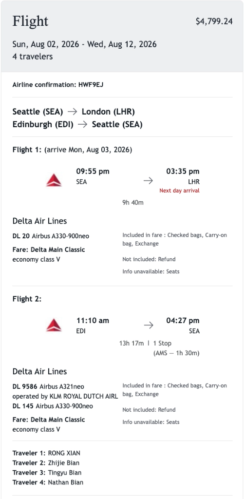
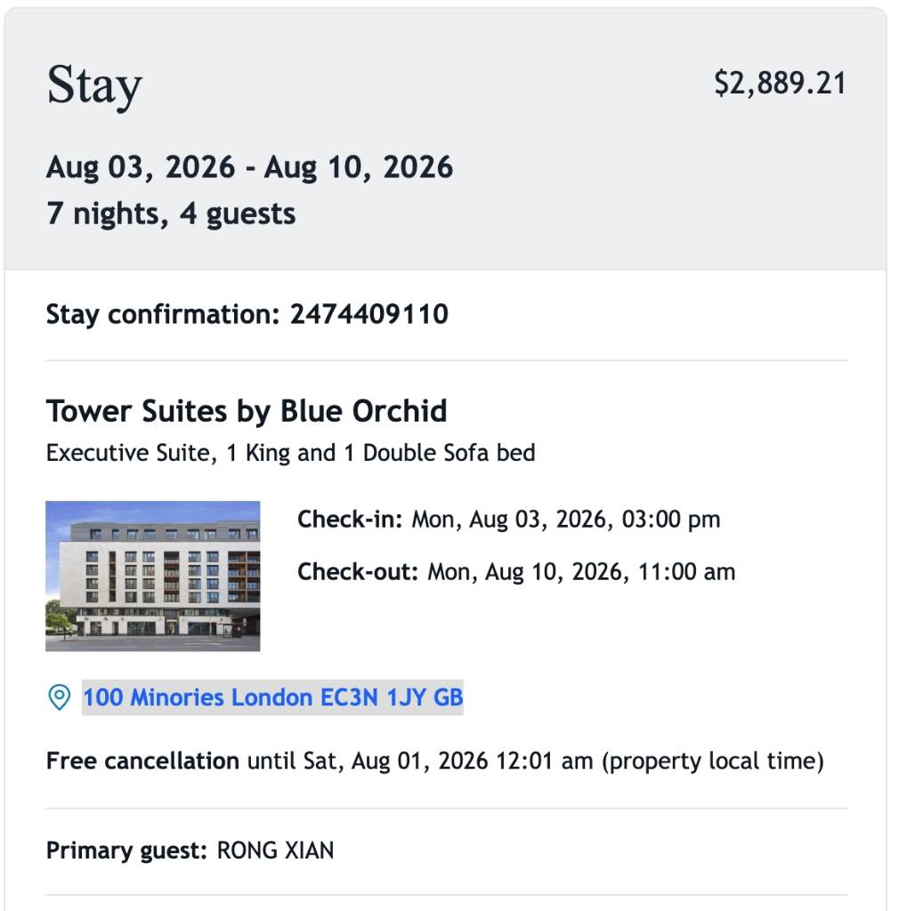
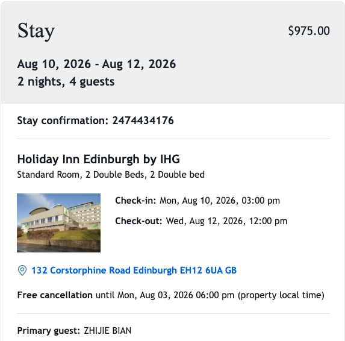
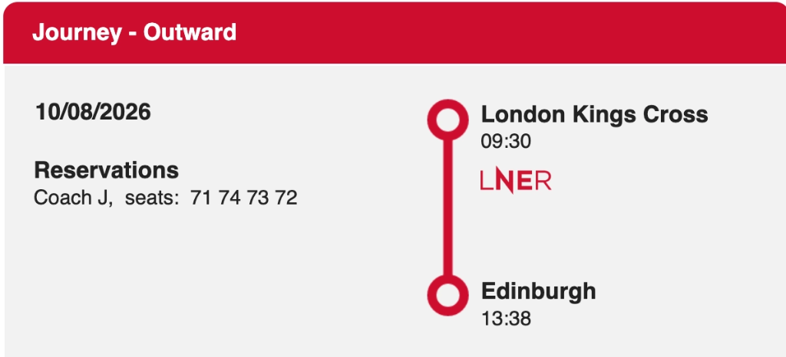

Gemini Answer
Table of Contents
- Question
- Answer
- 伦敦与爱丁堡家庭游详细行程与避坑指南 (London & Edinburgh Family Travel Plan)
- 一、 行程总览与关键预订信息 (Trip Overview & Booking Details)
- 二、 逐日详细行程安排 (Daily Itinerary)
- Day 1: 8月2日 (周日) — 西雅图启程 (Seattle to London)
- Day 2: 8月3日 (周一) — 抵达伦敦与泰晤士河畔初体验
- Day 3: 8月4日 (周二) — 剑桥大学一日游 (Cambridge Day Trip)
- Day 4: 8月5日 (周三) — 白金汉宫换岗仪式与大本钟/西敏寺
- Day 5: 8月6日 (周四) — 大英博物馆与西区人文风情
- Day 6: 8月7日 (周五) — 哈利波特片场魔法之旅 (Harry Potter Studio Tour)
- Day 7: 8月8日 (周六) — 伦敦塔历史深度游与博罗美食集市
- Day 8: 8月9日 (周日) — 皇家公园与英伦购物休闲
- Day 9: 8月10日 (周一) — 沿海景观火车前往爱丁堡与卡尔顿山
- Day 10: 8月11日 (周二) — 爱丁堡城堡与中世纪古城深度游
- Day 11: 8月12日 (周三) — 告别苏格兰，返程西雅图 (EDI -> AMS -> SEA)
- 三、 关键项目注意事项、Tips 与避坑指南 (Tips & Pitfalls)
Question
我一家人去 Aug 2 - 12 去London 和爱丁堡 旅游 图片有部分信息 另外 我们计划
Aug 4 暂未计划
Aug 5 上午 观看白金汉宫换岗意识 下午 西敏寺大教堂 大ben钟
Aug 6 上午 大英博物馆 下午 未计划
Aug 7 上午 Harry Potter Warner Bros. Studio Tour London
Aug 8 - 9 暂未计划
Aug 10 坐火车去爱丁堡
Aug 11 在爱丁堡观光
Aug 12 坐飞机会seattle
Aug 4 暂未计划
Aug 8 - 9 暂未计划
有一天我回去剑桥大学观光
请根据以上信息指定详细的旅行计划 以及每个项目需要注意的地方 tips pitfalls
用@gem-doc生成报告
Answer
伦敦与爱丁堡家庭游详细行程与避坑指南 (London & Edinburgh Family Travel Plan)
一、 行程总览与关键预订信息 (Trip Overview & Booking Details)
- 出行成员 (4位旅客): RONG XIAN, Zhijie Bian, Tingyu Bian, Nathan Bian
- 出行时间: 2026年8月2日 – 8月12日（共 11 天 10 晚）
- 往返机票 (Delta Air Lines - 确认号
HWF9EJ): - 去程 (DL 20): 8月2日 09:55 PM (SEA)
→ 8月3日 03:35 PM (LHR) 直飞（空客 A330-900neo，飞行时间 9h 40m） - 回程 (DL 9586 / DL 145): 8月12日 11:10 AM (EDI)
→ 13:40 PM (AMS 中转 1h 30m)
→ 16:27 PM (SEA)（阿姆斯特丹中转，总时长 13h 17m） - 伦敦住宿 (8月3日 – 8月10日, 7晚):
- 酒店: Tower Suites by Blue Orchid (确认号
2474409110) - 地址: 100 Minories, London EC3N 1JY, GB（毗邻伦敦塔 Tower of London 与 Tower Hill 地铁站）
- 房型: Executive Suite (1 King & 1 Double Sofa bed)
- 爱丁堡住宿 (8月10日 – 8月12日, 2晚):
- 酒店: Holiday Inn Edinburgh by IHG (确认号
2474434176) - 地址: 132 Corstorphine Road, Edinburgh EH12 6UA, GB（毗邻爱丁堡动物园，直达市中心与机场）
- 房型: Standard Room (2 Double Beds)
- 跨城火车 (8月10日 LNER 火车):
- 车次: 09:30 AM (London Kings Cross)
→ 13:38 PM (Edinburgh Waverley) - 座位: Coach J, Seats 71, 74, 73, 72




二、 逐日详细行程安排 (Daily Itinerary)
Day 1: 8月2日 (周日) — 西雅图启程 (Seattle to London)
- 21:55: 从西雅图塔科马国际机场 (SEA) 乘坐达美航空 DL 20 航班直飞伦敦希思罗机场 (LHR)。夜航休息，准备开启英伦之旅。
Day 2: 8月3日 (周一) — 抵达伦敦与泰晤士河畔初体验
- 15:35: 顺利抵达伦敦希思罗机场 (LHR) Terminal 3/4，办理入境与提取行李。
- 16:30 – 17:30: 乘车前往伦敦市中心酒店。
- 交通推荐: 可乘坐 Elizabeth Line (伊丽莎白线紫线) 从希思罗直达 Liverpool Street 站，再打车 3 分钟或步行 8 分钟即达酒店；4 人携带行李亦可直接使用 Uber XL。
- 17:30: 入住 Tower Suites by Blue Orchid (100 Minories)，办理 Check-in 并在行政套房整理休息。
- 18:30 – 20:30: 晚间漫步。酒店距离 Tower Bridge (伦敦塔桥) 与 St Katharine Docks (圣凯瑟琳码头) 仅 3 分钟步行路程。漫步泰晤士河畔，欣赏塔桥夜景，并在码头附近的英式餐厅享用晚餐。
Day 3: 8月4日 (周二) — 剑桥大学一日游 (Cambridge Day Trip)
- 08:30 – 09:30: 从酒店乘坐地铁 Circle Line 至 London King's Cross (国王十字车站)，乘坐 LNER / Great Northern 火车直达剑桥 (Cambridge) 车站（车程约 50 分钟）。
- 10:00 – 12:30: 游览剑桥核心学院区：
- King's College (国王学院)：参观著名的国王学院礼拜堂 (King's College Chapel)，欣赏哥特式建筑与徐志摩《再别康桥》诗碑。
- River Cam Punting (康河撑船泛舟)：体验 45 分钟经典康河划船之旅，穿过徐志摩笔下的康河、叹息桥与数学桥。
- 12:30 – 14:00: 剑桥小镇午餐，推荐前往著名的 The Eagle Pub (二战飞行员与 DNA 发现地鹰酒吧) 或 Fitzbillies 尝著名的肉桂卷 (Cinnamon Buns)。
- 14:00 – 16:30: 参观 Trinity College (三一学院)（牛顿苹果树所在地）与 St John's College (圣约翰学院)。
- 17:00 – 18:00: 乘火车返回伦敦国王十字车站。顺道在国王十字车站打卡 Platform 9¾ (九又四分之三站台)。
Day 4: 8月5日 (周三) — 白金汉宫换岗仪式与大本钟/西敏寺
- 09:30 – 11:30: Buckingham Palace Changing of the Guard (白金汉宫换岗仪式)。
- 预留时间: 换岗仪式于 11:00 正式开始。建议 09:45 – 10:00 前到达 Victoria Memorial (维多利亚女王纪念碑) 阶梯上方占据最佳视野。
- 12:00 – 13:30: 穿过 St James's Park (圣詹姆斯公园) 欣赏绿意与天鹅，在 Westminster 附近享用午餐。
- 13:30 – 15:30: 参观 Westminster Abbey (西敏寺大教堂/威斯敏斯特教堂)。感受千年来英国皇家加冕与名人安葬地（牛顿、达尔文、霍金之墓）。
- 15:30 – 17:30: 游览 Big Ben (大本钟)、Houses of Parliament (英国国会大厦) 与 Westminster Bridge (威斯敏斯特桥)。
- 18:00 – 19:30: 可选择乘坐 London Eye (伦敦眼摩天轮)，俯瞰伦敦日落全景。
Day 5: 8月6日 (周四) — 大英博物馆与西区人文风情
- 09:30 – 13:00: 参观 British Museum (大英博物馆)。重点打卡罗塞塔石碑 (Rosetta Stone)、帕特农神庙雕塑、埃及木乃伊馆以及中国馆。
- 13:00 – 15:00: 前往 Covent Garden (柯文特花园) 享用午餐，游览街头艺人表演，并打卡彩虹小巷 Neal's Yard。
- 15:00 – 18:00: 漫步至 Trafalgar Square (特拉法加广场)，参观免费开放的 National Gallery (国家美术馆)，欣赏梵高《向日葵》、达芬奇与莫奈名画。
- 19:00: 晚上可在西区 (West End) 观看一场经典音乐剧（如《歌剧魅影》或《狮子王》）。
Day 6: 8月7日 (周五) — 哈利波特片场魔法之旅 (Harry Potter Studio Tour)
- 08:30 – 09:15: 从 London Euston 车站乘坐快车 (West Midlands Trains，仅需 20 分钟) 到达 Watford Junction 车站，随后转乘免费接驳巴士到达片场。
- 09:45 – 14:00: Warner Bros. Studio Tour London (哈利波特影城) 沉浸式参观！探索大礼堂、九又四分之三站台、霍格沃茨特快列车、禁忌森林、古灵阁银行与对角巷，品尝黄油啤酒 (Butterbeer)。
- 15:00 – 18:00: 返回伦敦市中心，参观 St Paul's Cathedral (圣保罗大教堂)，随后步行穿越 Millennium Bridge (千禧桥) 直达 Tate Modern (泰特现代艺术馆)。
Day 7: 8月8日 (周六) — 伦敦塔历史深度游与博罗美食集市
- 09:00 – 12:00: 参观 Tower of London (伦敦塔)（就在酒店门前，步行 2 分钟！）。观看英国皇室皇冠珠宝 (Crown Jewels) 与白塔 (White Tower)。
- 12:30 – 14:30: 穿过 Tower Bridge 漫步至 Borough Market (博罗市场)，体验伦敦最著名的美食集市，品尝生蚝、西班牙海鲜饭与烤肉甜点。
- 15:00 – 18:00: 从 London Bridge Pier 乘坐 Uber Boat by Thames Clippers (泰晤士河水上巴士) 前往 Greenwich (格林威治)，参观本初子午线 (Prime Meridian) 与皇家天文台。
Day 8: 8月9日 (周日) — 皇家公园与英伦购物休闲
- 09:30 – 12:30: 游览 Hyde Park (海德公园)、Kensington Gardens (肯辛顿花园)，参观 Natural History Museum (自然历史博物馆)（恐龙化石与蓝鲸骨架）。
- 13:00 – 17:00: 购物体验：前往 Regent Street (摄政街)、Oxford Street (牛津街) 与 Harrods (哈洛德百货) 采购英伦伴手礼。
- 18:30: 泰晤士河景观餐厅享用伦敦告别晚宴。
Day 9: 8月10日 (周一) — 沿海景观火车前往爱丁堡与卡尔顿山
- 08:15: 酒店办理退房，前往 London King's Cross 车站。
- 09:30 – 13:38: 乘坐 LNER 火车 前往爱丁堡（车厢 Coach J, 座位 71-74）。
- 沿途亮点: 火车在进入苏格兰境内后（过 Newcastle 与 Berwick-upon-Tweed），右侧窗外即为浩瀚震撼的北海海岸线风景！
- 13:38: 抵达 Edinburgh Waverley 车站。
- 14:30: 前往入住 Holiday Inn Edinburgh (132 Corstorphine Rd)，办理 Check-in。
- 15:30 – 18:30: 前往 Royal Mile (皇家麦尔大道) 漫步。此时正值 8月爱丁堡国际艺术节 (Edinburgh Fringe Festival)，街头充斥着来自全球的表演艺术家，气氛极其热烈。
- 19:00 – 20:30: 登上 Calton Hill (卡尔顿山)，俯瞰爱丁堡古城与日落全景。
Day 10: 8月11日 (周二) — 爱丁堡城堡与中世纪古城深度游
- 09:00 – 11:30: 参观 Edinburgh Castle (爱丁堡城堡)。屹立于死火山岩之上的古堡，参观命运之石 (Stone of Destiny)、苏格兰皇冠与城堡炮台。
- 11:30 – 13:00: 漫步 Victoria Street (维多利亚街)（色彩缤纷的弯曲街道，《哈利波特》斜角巷灵感来源）与 Grassmarket (草料市场) 午餐。
- 13:30 – 16:00: 参观 St Giles' Cathedral (圣吉尔斯大教堂) 与 Palace of Holyroodhouse (霍利鲁德宫)（英国国王在苏格兰的官方行宫）。
- 16:00 – 18:00: 可选择攀登 Arthur's Seat (亚瑟王座) 远眺壮丽海岸线，或在 Princes Street Gardens (王子街花园) 惬意散步休息。
Day 11: 8月12日 (周三) — 告别苏格兰，返程西雅图 (EDI -> AMS -> SEA)
- 08:15: 酒店退房，乘坐打车 (Uber/Taxi) 或乘坐 100 路 Airlink 巴士直达 Edinburgh Airport (EDI)（距离 Corstorphine Rd 酒店仅 15-20 分钟车程）。
- 09:00: 抵达 EDI 机场，办理行李托运与安检。
- 11:10: 乘坐达美 DL 9586 (KLM 执飞) 起飞前往阿姆斯特丹 (AMS)。
- 13:40: 抵达 AMS 机场（中转停留 1 小时 30 分钟）。
- 14:40: 乘坐达美 DL 145 航班起飞直飞西雅图 (SEA)。
- 16:27: 顺利降落西雅图 (SEA) 国际机场，结束愉快充实的英伦家庭之旅！
三、 关键项目注意事项、Tips 与避坑指南 (Tips & Pitfalls)
1. 白金汉宫换岗仪式 (8月5日)
- 换岗时间: 换岗仪式于上午 11:00 正式开始，但警卫队伍从 10:30 起即在 Wellington Barracks 整理集合。
- 避坑提示 (Pitfall): 白金汉宫正门黑铁栅栏前极其拥挤，身高受限且只能看背影。最佳观测点为 Victoria Memorial (维多利亚女王纪念碑) 的高阶梯上，视野开阔且可拍摄队伍入场全景。
- 天气取消: 若遇大雨天气，换岗仪式会自动取消。请在前一天或当天清晨在官方网站 (
householddivision.org.uk) 确认是否照常举行。
2. 哈利波特影城 (8月7日)
- 门票预订: 现场绝无售票！必须提前数月在官网预约精确的 Entry Time Slot。
- 交通避坑 (Pitfall): 从 London Euston 到 Watford Junction 时，务必乘坐 West Midlands Trains 的直达快车 (仅 20 分钟)，千万不要误乘坐每站都停的 Overground 慢车 (需 50 分钟)。
- 支付方式: 出 Watford Junction 车站后有免费的 Harry Potter 双层巴士接驳（刷门票或直接上车）。
3. 剑桥大学一日游 (8月4日)
- 康河划船避坑 (Punting Pitfall): 剑桥火车站和康河边有大量无牌照的野导游拉客推销高价划船票。建议提前在 Scudamore's 官网预约正规 guided punt，或直接在 Dock 现场向持有学生证的正规学生购买。
- 学院门票: 国王学院礼拜堂 (King's College Chapel) 需单独购票，建议提前在线预约，避免现场排长队。
4. 大英博物馆 (8月6日)
- 快速通道预订: 虽为免费开放，但必须提前在官网预约 Timed Entry Ticket。未预约者现场排队可能长达 1-2 小时。
- 游览路线: 馆藏浩瀚，家庭游建议聚焦四大核心区域：罗塞塔石碑（4展厅）、帕特农神庙（18展厅）、埃及木乃伊（61-64展厅）以及中国馆（33展厅）。
5. 爱丁堡 8 月艺术节特别提示 (8月10日 – 8月12日)
- 拥挤提示 (Fringe Festival): 8月是全球闻名的爱丁堡国际艺术节 (Edinburgh Fringe Festival)，Royal Mile (皇家麦尔大道) 全天人满患，街头表演丰富。出行请留足步行时间。
- 城堡预订: 爱丁堡城堡门票极为紧俏，必须提前在线预约门票。
6. 火车与市内交通 Tips
- LNER 火车观景 (8月10日): 已预订 Coach J 71-74 座位，位于车厢右侧。过 Newcastle 后的右侧海岸线极美，请准备好相机。
- 伦敦无接触支付 (Contactless Pay): 伦敦公共交通（地铁 Underground、公交车 Bus、伊丽莎白线、DLR、水上巴士）全线支持 Apple Pay 或 Contactless 信用卡，随刷随走，每日自动按最高上限封顶 (Capped Fare)，无需为全家人购买实体 Oyster 卡。
- 爱丁堡酒店交通 Advantage: 您预订的 Holiday Inn Edinburgh 位于 Corstorphine Rd，出门即是公交站，乘 100 路 Airlink 巴士 15 分钟直达爱丁堡 Waverley 市中心，反方向 15 分钟直达 EDI 机场，极其便捷！